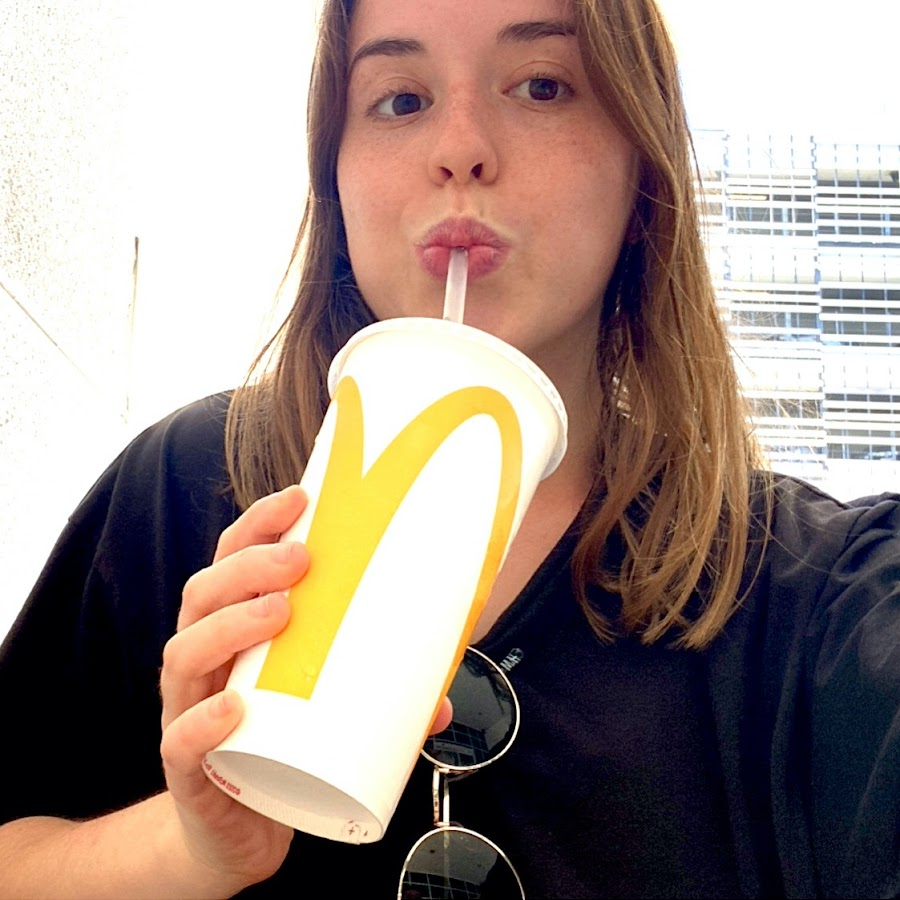
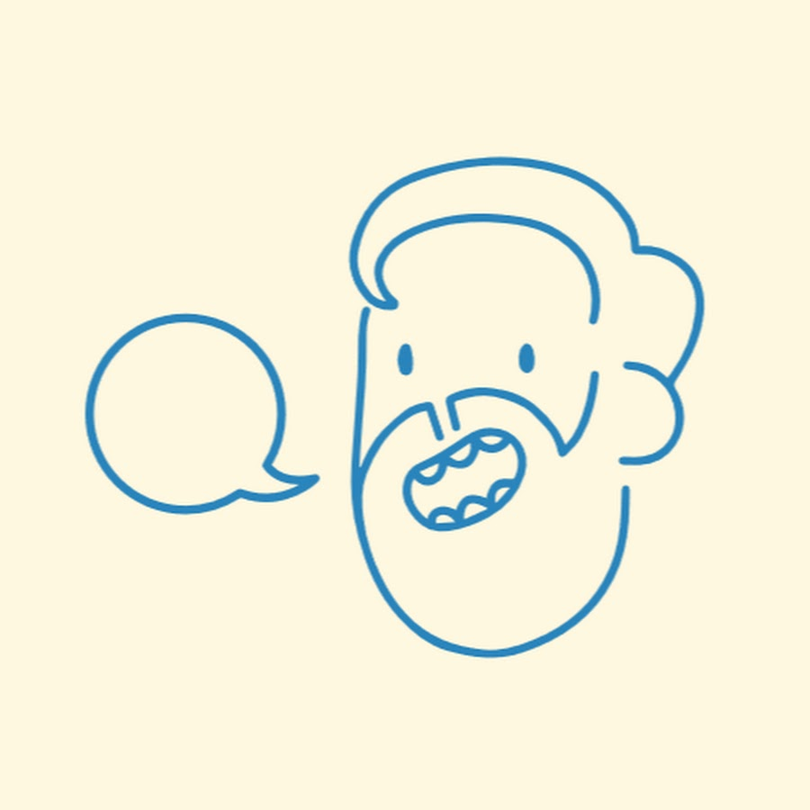
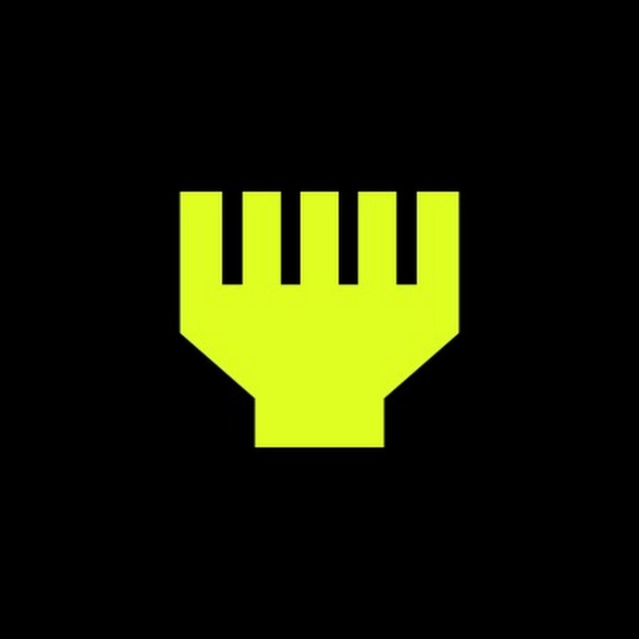

Voice Finder
MI ESPACIO
MUNDO PODCAST
ENTREVISTAS
The Wild Project, El sentido de la birra, Club 113
CULTURA POP
Raideos y Mazmorras, Charlando tranquilamente, Yo Interneto
RANDOM
Radio Pirata, Nadie sabe nada, Familia de libro
CREADORES RECOMENDADOS

The Wild Project
Adria Sola Pastor

Charlando tranquilamente

Yo Interneto
Jordi Wu